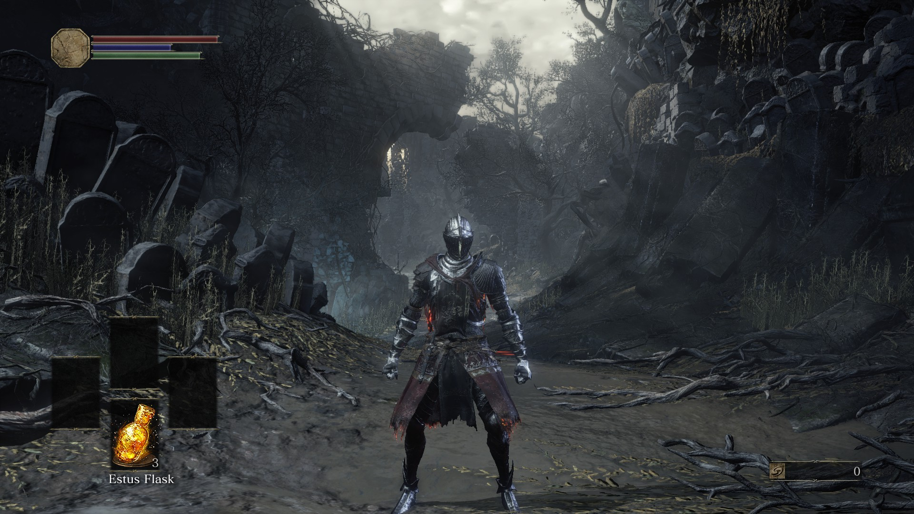

The Father was quick at work. Two days after Lord of Hail had perished, poem #113 appeared in #builds—a channel of our discord server dedicated to discussions about build-making in the game. It, as well as several upcoming poems, will be formatted in a specific way: every second poem will have each line start with ellipses.
#113 begins a series of poems dedicated to the Father’s craft. Examining what is almost certainly the Heart of Spears’ corpse, it becomes apparent to him that the body will have to be reinforced before it’s ready to be reanimated.
This is where an interesting mind-game begins within our community. Apparently, in parallel with these poems sent in public, the puppeteer had began messaging several members of the community in private, and making them “fetch” him the armor pieces for the last puppet. Each was sent a lengthy poem telling them to keep the exchange a secret, and verbosely describing which armor piece had to be fetched.
After poem #113, Narcolept was hit with the first fetching request, coming in as poem #114. The fetcher figured out that Dancer’s Gauntlets were wanted, and was then summoned by “The Father” at the High Wall of Lothric.
From Fanboy’s words (who was the next fetcher), they never saw The Father while being in his world, being left to drop the desired armor piece and disappear. Moreover, the fetchers never even knew if what they gave out was the right piece of armor—the poem was the only indication of the Puppeteer’s desires.
After the successful exchange, Narcolept left the world and received the following image from the Puppeteer:
Because the original is awfully dim, let us brighten it up artificially:

Several points of interest right from the start. First of all, this is inside the Father’s workshop, which we first saw in #101. The figure in front of the fireplace is very likely the Heart’s corpse which is being fixed and stitched by the Father. It’s naked aside from the Dancer’s Gauntlets, which Narcolept had just fetched. The corpse also has a greatly malformed chest. In-game it’s completely hollowed out, but within the lens of the Puppeteer’s story it’s likely the damage from the spear Heart of Spears was impaled with.
Lastly, the rim of the image is blurred, and there is a “???” in the bottom-right. Later on we would get more of these images, and then it would be realized that the question marks signified in-game location. The “???” likely means that the Father’s workshop is in an unknown place.
After successfully receiving the Gauntlets, the Puppeteer had signaled a success with poem #115. Done with the smallest piece of armor, the Father was set on moving to the legs of the corpse.
But before the next fetching, poem #116 appeared. We initially were uncertain what it was talking about. In hindsight, it’s visible that it’s a poem about the “cyclopean spear” by which the Heart of Spears was impaled. While working on the Heart’s corpse, the Father surely had to take it out. And as we saw in the image Narcolept received for the first fetch, the Spear was indeed extracted.
Why would the spear be important though? Well, the puppet in question would need a weapon. And in Father’s own words, “cross oh so old, you’re fit to be the arm to end this tale of gore”.
(Annotation: The spear itself is quite important. We first see it stuck in the Heart of Spears. We know that the first Spear had a strong affinity for the gods—the Heart of Spears used lightning based miracles and was only seen in the Ringed City, protecting Filianore.
#27, #31, #60, #98, tell us that Oden, the ‘titan Lord of Thunder’, had struck Heart of Spears with the Spear, and thus has subdued it and plunged it into the Abyss. From DS1, we have Dark Ember’s description:
Ember required for weapon ascension. The church long hid the forbidden black ember, and no living blacksmith knows of it.
Occult weapons were used to hunt the gods, and are effective against their following and kin.
—Dark Ember, DS1
The fact that Heart of Spears—a powerful follower of gods—was plunged into the abyssal slumber after being struck with this spear indicated that it must have indeed been a potent occult artifact back in the days. And now the Father aims to give this weapon to his last puppet to kill the Soul of Cinders—the very manifestation of the gods’ ambitions.)
Two days later, on May 1, poem #117 announced the second fetching. We, of course, were unaware of it, and even each of the fetchers themselves did not know whether there were any others. As per the Puppeteer’s request, until the end of the event they would have to dance around the truth.
#117 itself again talked about the poor state of the Heart’s corpse—it sustained so much damage that it couldn’t even move in any meaningful way. After mending of the internal damage was done, more armor was needed. Here the Puppeteer pulled a curious move: this very poem had asked us to choose the armor for the puppet (“encase by hand in leather, stone, or metal rich?”). A quick response from those online at the moment was unanimous: “metal is the coolest”.
And so, the second fetching truly began. This time, Fanboy was the fetcher. #118, written in the same style as Narcolept’s #114, it asked of Fanboy to bring the Dancer’s Leggings to the High Wall of Lothric. And just in the same way as Narcolept, the current fetcher had been summoned into “The Father”’s world and dropped the armor piece without ever seeing the Father.
The image was yet again the reward for successfully solving this little riddle.
The original almost completely black, some brightening is in order if we’re to see anything. Heart’s corpse is laying in the same pose as in the Narcolept’s reward image, yet this time away from the fireplace and on a table. The head is again completely invisible, but we now see that both the Dancer’s Gauntlets and Leggings are equipped firmly. The location of the image is still unknown (“???”).
After the successful exchange with Fanboy, the Puppeteer had announced the progress in the puppet’s construction with #119. The limbs were now completely mended, and the Father was undoubtedly pleased. Now came the time to fix the torso. It appears that the corpse, while not being alive by any means, was not necessarily dead. The last line signifies that it may be in something like a mindless hollowed out state. It’s nevertheless slightly confusing, as we know that the corpses heart was most certainly torn out by the Spear (#30).
On May 2, a small discussion arose about the fact that the Puppeteer had asked us which armor to use. Some people decided that “metal” wasn’t the best choice, but the Puppeteer had struck them down with #120. Aside fro shutting down the argument, it let us know what exactly the Father is doing—preparing the Heart’s corpse for the last part of his grand plan.
On May 3, the work on the torso began. #121 let us know that the Father didn’t think the Dragonscale Armor—which was the armor Heart of Spears wore—befitting the last puppet. Craftsman pondered about using the “old rusted plate”, but ultimately decides that it also doesn’t fit the great fate he had planned for the puppet.
And so, he comes to the third fetcher, Kallah, with poem #122. The chestpiece chosen was from the Firelink set. Fitting that the thing made to kill the Soul of Cinders wears its armor, isn’t it?
As with the other fetchers, upon successfully giving the Father what he wanted, Kallah had received an image:
The corpse is now almost completely ready for its big appearance. #123 made everyone know that the puppet’s torso was mended and safely encased in the warm metal of the chestplate.
The Father, in a sudden realization, understands that very soon he will be free of his own plan. Perhaps this is the Puppeteer again telling us his own thoughts through his in-story character. His “journey” with us was indeed long, spanning a third of a year in our community. He, certainly, was glad to see this big story safely coming to a satisfying conclusion.
The last fetch was to be done on May 5. #124 yet again signified the Father working on the puppet—this time on its head.
However, before that, #126 was sent, addressing SlugBot. SlugBot was our server’s main and only bot, developed and handled by Narcolept. Not so long ago, the bot began hosting mini-boss events similar in idea to the Puppeteer’s story, but featuring its own original mini-bosses. This poem was the Puppeteer’s response to those events. Some people thought that it was an attack on the other person doing mini-bosses and stealing the Puppeteer’s scene. However, Alex’s interpretation, which most agreed with, was much friendlier and more peaceful:
I’m taking it like this [line by line]
- Someone else is creating their own story?
- Next line is weird grammatically, but it seems like he’s saying that, with pleasure (because he’s glad to see someone else doing the same thing he is), he he holds his own tired gaze with the other person. Looking at someone directly in the eye is usually a form of acknowledging or recognizing them.
- Next line is telling us that his own gaze is the one of someone who’s “meek, exhausted, pale.” I presume that’s because he himself is tired as this whole thing has been a lot of work for him.
- Last line is basically telling the other person that he hopes that they’re able to get through their story despite the challenges of doing so.
Going back to #124, a discussion had sprung up about this potentially being another choice we had to make. All of the “crowns” were recalled quickly. Most literal “crowns” were quickly abandoned. Firelink helmet and Lorian’s Crown were proposed as good possibilities—both fit the description of “tough metal”.
Having exhausted the basic helmets we also thought that Cheat Engine may be involved, with the Puppeteer doing something like putting Undead Arena’s crown on top of this puppet’s head.
The reality was much simpler. The fourth—and last—fetcher was chosen to be Jean. He received #125, which asked him to drop a Lothric Knight Helmet in the Dragon Barracks. Of course, he was unaware of any of the other fetchers or anything that was happening “under the hood” for the past week, just as all of them were.
With the request done, Jean got his confirmation and reward:
This image was later shared by Jean with us, omitting any information about the fetching he did, and making the image quality a lot worse (likely intentional).
We, having not seen a single image since #101, were extremely excited by this. The resolution was just good enough to get the general idea of what we were seeing, but not as good as the original to catch any details. Well done on Jean’s part in preserving the mystery.
Everyone was quick to jump on the image and try to extract as much as we possibly could. Immediately we knew this was the puppet in the making. The helmet was correctly identified as Lothric Knight’s, but slightly uncertain. The leggings were easier—the pointy sabatons were quickly recognized as Dancer’s.
As this discussion was going on, the Puppeteer sent his fetchers a simple “!”, likely alarming them to not spill the secret. (As of writing this it’s unknown whether all 4 have gotten an exclamation mark message. Only Fanboy and Narcolept have openly said that they did, and both were present during the armor discussion).
The chestpiece and gauntlets, however, were harder. Gauntlets Narcolept correctly said were Dancer’s. But, alarmed by the Puppeteer, quickly threw that idea under the bus in favor of Fire Witch’s. The chestpiece was thought to be either Firelink or Yhorm’s (which can be equipped in the game via Cheat Engine).
Later on, Noxuary would go in-game and use CE to check both possibilities for the chestpiece. He produced two screenshots, and upon looking at them we have unanimously decided that the figure on Jean’s image was most certainly wearing Firelink chest:
Around this point an idea arose that Oden’s soul should be put into the Heart’s vessel image in the same manner Ragg did with the Humanity. With a little bit of work, Tikaro did just that:
Immediately, the Puppeteer responded with his own version of the image:
This image was never used for anything in the story, but it did confirm the idea that the last puppet would be created exactly in the same way: by putting the Lord Soul and Humanity into the Heart’s corpse.
Poem #127 was sent at some point after the last fetch was done. Just as the previous poems which finished a fetching quest, this one had set a goal for the future. Only, this time it was a goal the Father would achieve alone: “One task remains ‘fore I can kneel: breathe life into the finished mold”. Mended from the damage, encased in fresh, robust armor—Heart’s corpse was ready to be reanimated.
And the Puppeteer was ready for his final event. He contacted Narcolept (who was a fellow moderator of our server) and broke his character to make a proper announcement of the final event:
@PC Player
The Puppeteer has also been working hard. The wet whispers speak of something big happening next weekend (11/05/18–13/05/18), starting at 16:00 GMT each day...
We of course understood what this meant. Three consecutive days of events announced as clearly as possible, the father finishing up the new puppet, and nothing left in the Timeline? We were going full speed towards the big finale. We were somewhat sentimental about it, but were looking forward to the possibility of talking with the person behind the Puppeteer.
Two days later, as described by #128, the Father imbued the precious corpse with a “formless grey” mixture of Humanity and the Lord Soul. And it was the last time he would do it. After this poem, sent on May 7, we would be getting one every day up until the final event.
On May 8, the result of Father’s meticulous craft was shown. #129. Born of both the dark and the light, the puppet was neither (“Beyond the scope of light, beyond the reach of dark”). The synthetic life outside the scope of the world, helplessly caught inside the endless loop of Ages.
The Father’s work was done. Yet this life needed instructions—and they were given in #130. Yet again we saw the craftsman’s unbent belief in his creation. And deservedly so—this creature was the result of his whole plan.
On May 10, the day before the event, #131 gave us the last bite of the creation of the puppet. The Great Old Sin (Soul of Cinders) is born of eons upon eons of Lords of Cinders sacrificing themselves to the First Flame. If Father’s puppet was to succeed in wiping it out—it will have to grow much stronger, preying and consuming every last scrap of power it will find in any living being during its arduous journey.
Now, we stood on the very culmination of not just the Father’s plan, but of the whole story itself. Everything from the very beginning was building up to this. All the events and storylines we have experienced lead us to this one final event: